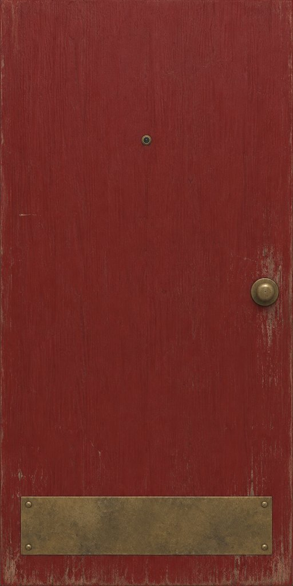
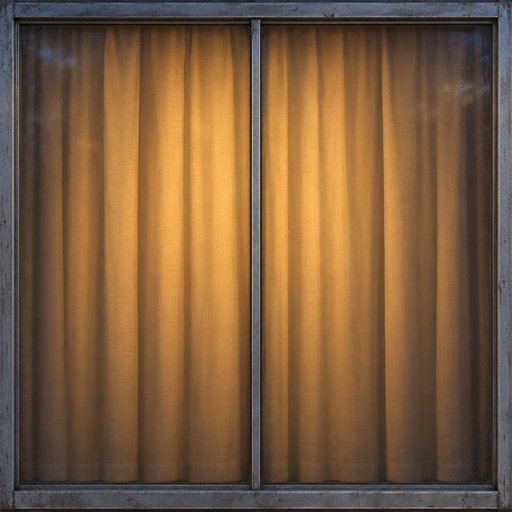
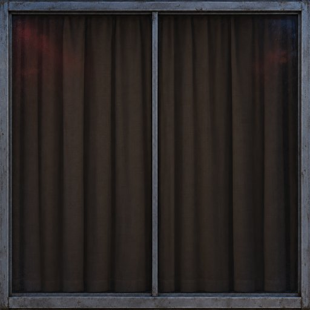
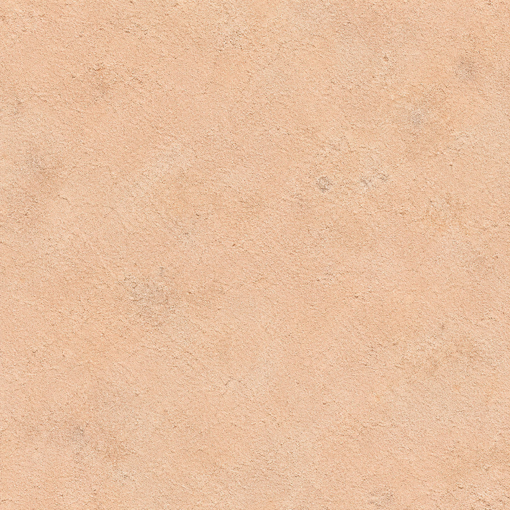
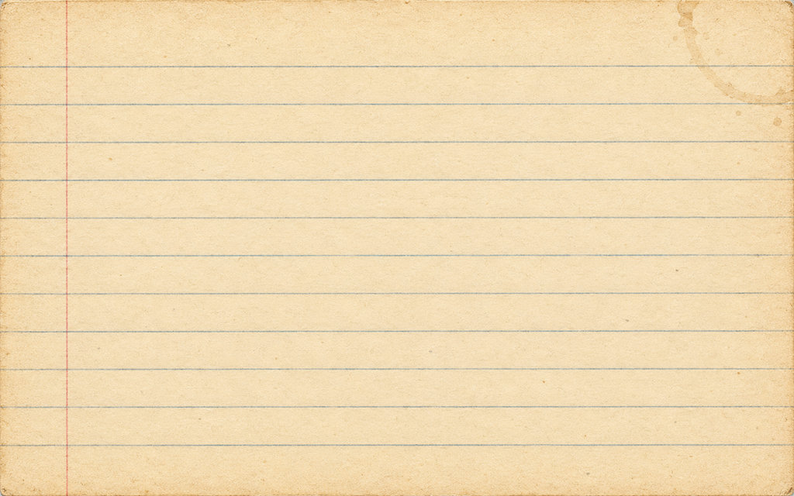
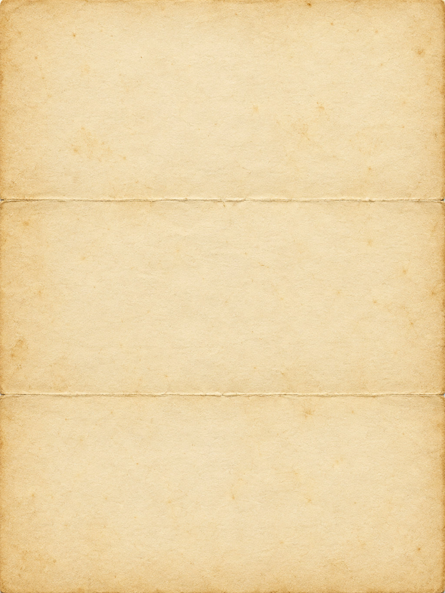

Motelldør
motel/door_room_blank.jpg · 512 × 10240,92 × 2,03 m. Dørbladet fyller bildet. Tall tegnes separat.

Tent vindu
motel/window_night_lit.jpg · 512 × 5121,4 × 1,2 m. Natt uten silhuetter eller personer.

Mørkt vindu
motel/window_night_dark.jpg · 512 × 512Samme karm og gardiner som det tente vinduet. Svakt skjær fra neonskiltet.

Motellvegg
motel/tex_motel_wall.jpg · 1024 × 10242,0 × 2,0 m per gjentakelse. Vanlig 2 × 2-repetisjon.


Feltkort fra 1947
docs/card_field_1947.jpg · 1024 × 6405 × 8 tommer. Tekstfritt underlag for Tomás' feltkort, E11.

Brevark fra 1947
docs/letter_paper_1947.jpg · 1024 × 1365Brettet i tre. Underlag for brevet fra Tomás, E13.